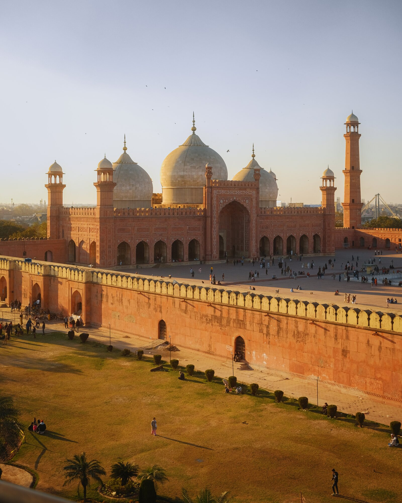

I’m not photographing the world as it is.
I’m photographing the way it felt to me.
TANLEO
Photographer / Retoucher

TANLEO
Photographer / Retoucher
Abu Dhabi, UAE
I’m Tania. I make photographs about the things that catch me off guard: light, colour, people, places, the moments that somehow look better than they have any right to.
I’m interested in the feeling first. The rest is editing, retouching, and being unnecessarily particular about the details.
Photography
Retouching
Colour
Selected Work
Architecture
light / structure

Portrait / Editorial
held / unhurried

Photo Retouching
careful / restrained

Exhibited & Featured
- 01 Fulle Galleria International Exhibition, Argentina
- 02 Spaces of Light Sheikh Zayed Grand Mosque Competition
- 03 Qasr Al Hosn Official Instagram Feature
- 04 Cultural Foundation Official Instagram Feature
- 05 Film Abu Dhabi Commission Official Instagram Feature
- 06 Ethara / Abu Dhabi Grand Prix Corporate Suite Photography
- 07 What's On Abu Dhabi Published Feature
- 08 Sony Workshops Gearbox, Dubai — Color Grading for Street Photography
Let's talk
Tell me about your project
Whether it's a street series, a portrait sitting, an architectural shoot, or a set of images that need careful retouching — I'd love to hear about it. I typically reply within 1–2 business days.
Email
tanleoad@gmail.com
Instagram
@tanleo_
Based In
Abu Dhabi, UAE